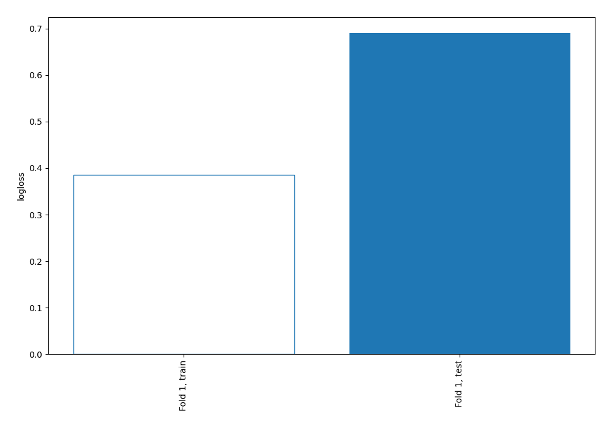
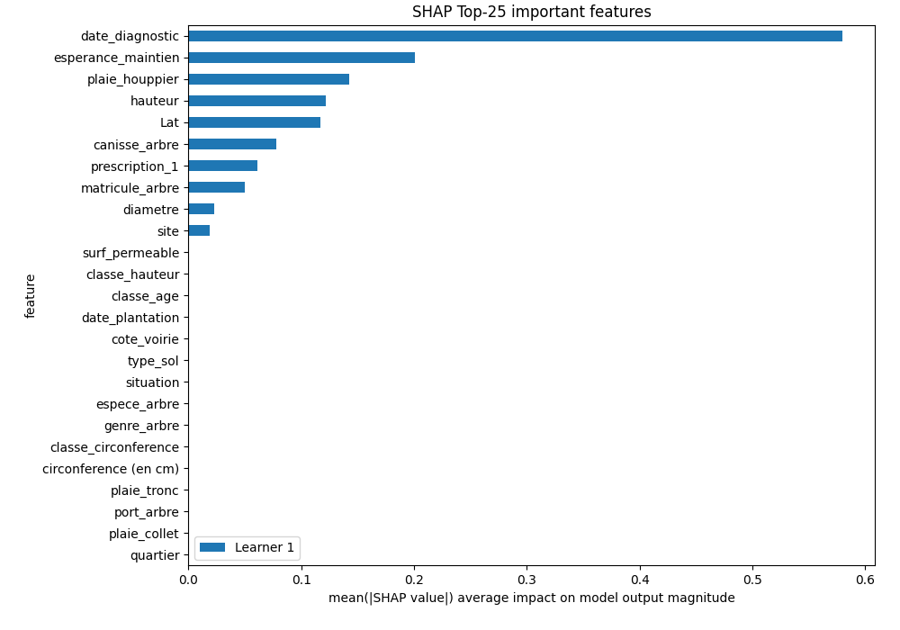
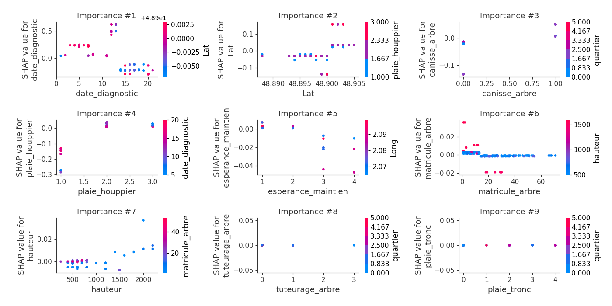
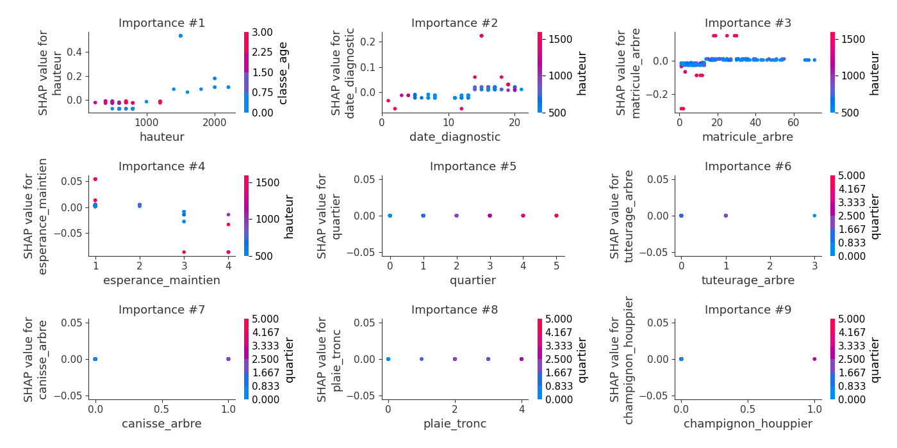
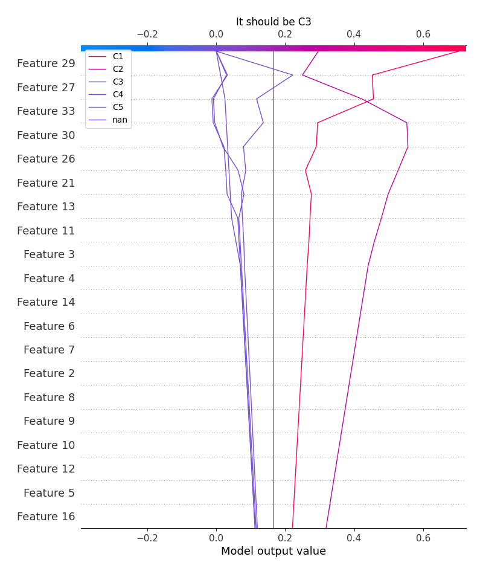
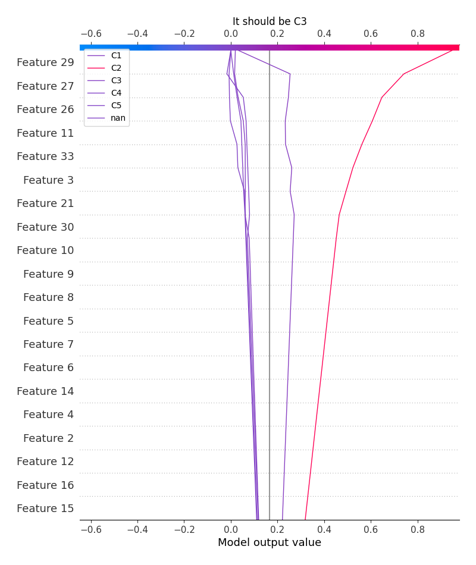
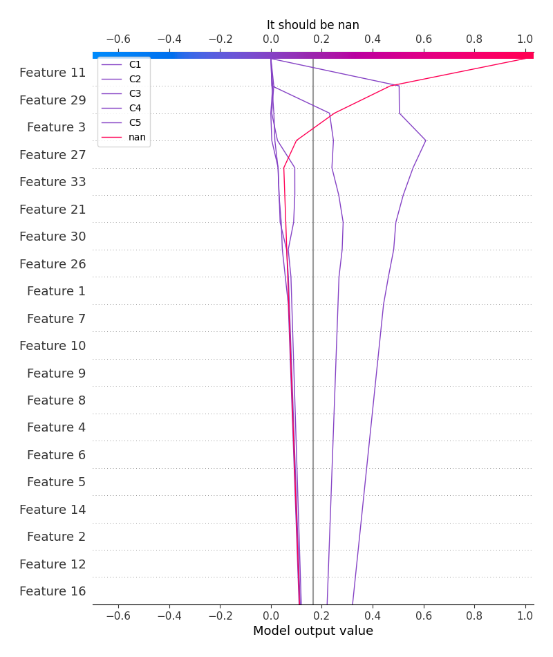
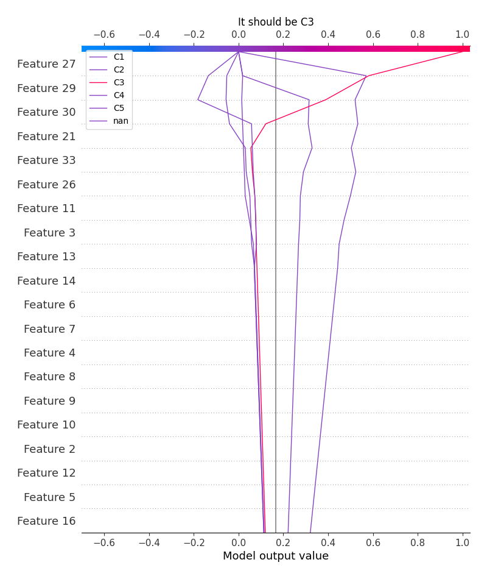

Summary of 2_DecisionTree
<< Go back
Decision Tree
- criterion: entropy
- max_depth: 4
- num_class: 6
- explain_level: 2
Validation
- validation_type: split
- train_ratio: 0.75
- shuffle: True
- stratify: True
Optimized metric
logloss
Training time
24.6 seconds
Metric details
|
C1 |
C2 |
C3 |
C4 |
C5 |
nan |
accuracy |
macro avg |
weighted avg |
logloss |
| precision |
0.825 |
0.855422 |
1 |
0.666667 |
0.8 |
1 |
0.84507 |
0.857848 |
0.84983 |
0.69032 |
| recall |
0.767442 |
0.922078 |
0.428571 |
0.8 |
0.8 |
1 |
0.84507 |
0.786349 |
0.84507 |
0.69032 |
| f1-score |
0.795181 |
0.8875 |
0.6 |
0.727273 |
0.8 |
1 |
0.84507 |
0.801659 |
0.84061 |
0.69032 |
| support |
43 |
77 |
7 |
5 |
5 |
5 |
0.84507 |
142 |
142 |
0.69032 |
Confusion matrix
|
Predicted as C1 |
Predicted as C2 |
Predicted as C3 |
Predicted as C4 |
Predicted as C5 |
Predicted as nan |
| Labeled as C1 |
33 |
10 |
0 |
0 |
0 |
0 |
| Labeled as C2 |
5 |
71 |
0 |
1 |
0 |
0 |
| Labeled as C3 |
2 |
1 |
3 |
1 |
0 |
0 |
| Labeled as C4 |
0 |
0 |
0 |
4 |
1 |
0 |
| Labeled as C5 |
0 |
1 |
0 |
0 |
4 |
0 |
| Labeled as nan |
0 |
0 |
0 |
0 |
0 |
5 |
Learning curves

Permutation-based Importance

SHAP Importance

SHAP Dependence plots
Dependence C1 (Fold 1)

Dependence C2 (Fold 1)

Dependence C3 (Fold 1)

Dependence C4 (Fold 1)

Dependence C5 (Fold 1)

Dependence nan (Fold 1)

SHAP Decision plots
Worst decisions for selected sample 1 (Fold 1)

Worst decisions for selected sample 2 (Fold 1)

Worst decisions for selected sample 3 (Fold 1)

Worst decisions for selected sample 4 (Fold 1)

Best decisions for selected sample 1 (Fold 1)

Best decisions for selected sample 2 (Fold 1)

Best decisions for selected sample 3 (Fold 1)

Best decisions for selected sample 4 (Fold 1)

<< Go back